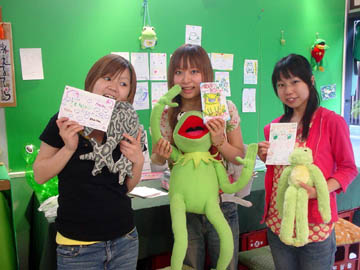
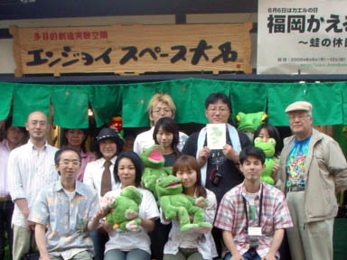
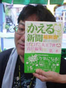
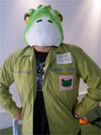

地震もケロリ！福岡かえる展７開幕！

【福岡かえる展事務局】七回目のカエル展は、なんと開幕日がカエルの日という、超幸運なスタートとなりました。初日から概算１２００人を超える市民がやってきたのも、それは大名という土地の威力かあああ。地震で相当な被害をうけ、昔ながらの面影を形成していた、古い土壁作りの建築物が大打撃を受けた大名地区。かえる展の開幕は、大名に活力をよみガエルための、意味もこもっているのだあああああ。みなさあああん。大名に来たらたずねてきてほしいぞ。

【全国かえる奉賛会】初日は多数の取材もやってきて、大にぎわいでした。最終日の日曜日まで、たくさんの人々の来場をお待ちしています！カエル新聞縮刷版を会場で先行発売！

 【全国かえる奉賛会】創刊から九年目。カエラーとともに歩んできた「かえる新聞」の縮刷版がついにできました。定価は１０００円で、会場で先行販売しています。またネットでも販売受け付け中です。
【全国かえる奉賛会】創刊から九年目。カエラーとともに歩んできた「かえる新聞」の縮刷版がついにできました。定価は１０００円で、会場で先行販売しています。またネットでも販売受け付け中です。
これ一冊で、全国のカエラーの動向はもちろん、全国各地のカエル名所などもたちまちのうちに分かります。定期購読していたら、君も、最強のカエラーになれるはずであるうううううううう。
 会場にやってきてくれて、しかもたまたま大王がいた場合は、サインしてもいいぞおおおお。
会場にやってきてくれて、しかもたまたま大王がいた場合は、サインしてもいいぞおおおお。
大王がいないときは、げこげこ大王制服を代わりに展示しているので、制服を大王の名代と思い、おがむなり、敬礼するなりなんなりとしてくれい。きっと御利益があることであろう。ただ町をあるいているだけで、むこうから幸運がぴょんぴょん歩いてくるというやつだああああ。
なお、今年は、国定教科書として採用されるよう作られている。
だから、いまからでも遅くはない、近隣諸国とも仲良くやってゆける充実したものになっているので、一家に一冊。家庭の常備薬として、かえる新聞縮刷版を購読しようではないかあああああああ。

大王近影！かえる新聞縮刷版へ発刊の辞（一部影武者使用） この度、カエラーの同志諸君とともに歩んできた、カエル新聞の縮刷版を発刊するにいたり、まことに喜ばしく思っております。今後ともカエルのネタがあったら、どんどん投稿して、カエル徽章を手にしてくれええええええ。
携帯で携帯＠カエル新聞を吸い取ろう！
 【全国かえる奉賛会】携帯から初めてカエル新聞を見たいというひとにとっては、アドレスを打つのが難儀なものよのう！そこでドコモとボーダフォンの一部機種から、カメラをかざしてコードを読みとるんぢゃああ。なお、このQRコードを眺めていたらカエルやらオタマジャクシやらが浮かび上がってくるらしいぞおお。ほんとかああ。
【全国かえる奉賛会】携帯から初めてカエル新聞を見たいというひとにとっては、アドレスを打つのが難儀なものよのう！そこでドコモとボーダフォンの一部機種から、カメラをかざしてコードを読みとるんぢゃああ。なお、このQRコードを眺めていたらカエルやらオタマジャクシやらが浮かび上がってくるらしいぞおお。ほんとかああ。